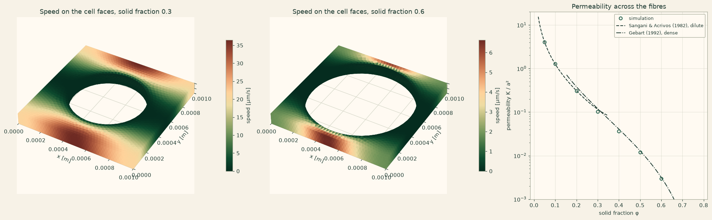
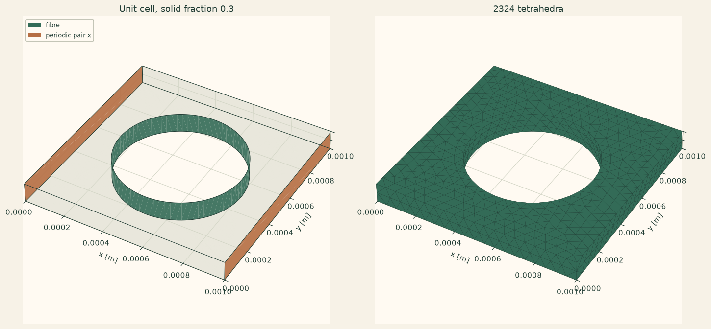

Docs › Examples › Permeability of a square array of fibres
Porous media · 3D
Permeability of a square array of fibres
The Darcy permeability across a square array of fibres from the 3D creeping flow through one periodic unit cell, for seven solid fractions.
Run locally with OneSimulation. The example downloads are free. Running them requires an activated runtime. Runtime Alpha 0.2.1a7 · CPython 3.13 on macOS (Apple Silicon), Ubuntu 22.04 (x86-64), and Windows x64. Installation and activation · View pilot plans. Scope of the reference checks.


What it computes
The unit cell is read from STEP files and meshed with tetrahedra whose three pairs of opposite faces match. OneSimulation solves the 3D Stokes flow driven by a uniform pressure gradient across the fibres with Taylor-Hood elements and periodic conditions in all three directions, and the permeability follows from the volume-averaged velocity. The script that builds the STEP files comes with the notebook.
What it checks
In the dilute range the permeability agrees with Sangani and Acrivos within 0.6 % to 0.9 % (solid fractions 0.05 to 0.2); in the dense range with Gebart's lubrication result within 11 %, 8 % and 5 % for 0.4 to 0.6; the mesh study changes K by 0.4 % between the two finest meshes.
Geometry
The notebook starts at the import of the CAD files permeability_square_fibre_array.step, permeability_square_fibre_array_10.step, permeability_square_fibre_array_20.step, permeability_square_fibre_array_30.step, permeability_square_fibre_array_40.step, permeability_square_fibre_array_5.step, permeability_square_fibre_array_50.step, permeability_square_fibre_array_60.step: STEP (AP242), readable by any CAD program, with the names of the faces that the boundary conditions use. Put them next to the notebook.


The geometry script
The script permeability_square_fibre_array_geometry.py builds the geometry with the CAD objects of OneSimulation and writes the files. Change a dimension there, run it, and run the notebook again.
"""Geometry of the OneSimulation example "Permeability of a square array of fibres".
Builds the periodic unit cell of a square array of parallel cylindrical fibres with the CAD objects
of OneSimulation: a square prism of side 1 mm around one fibre, 0.1 mm long along the fibre. One
file per solid fraction: permeability_square_fibre_array.step (solid fraction 0.3) and
permeability_square_fibre_array_<percent>.step for 5 to 60 percent. The cell faces keep their names
x_min, x_max, y_min, y_max, z_min and z_max, the fibre surface is fibre.outer_wall.
"""
import numpy as np
from onesim.cad.d3 import Box, Cylinder
side, thickness = 1e-3, 1e-4
for percent in (5, 10, 20, 30, 40, 50, 60):
radius = side * np.sqrt(percent / 100 / np.pi)
cell = Box(length=side, width=side, height=thickness) - Cylinder(
radius=radius, length=3 * thickness, origin=(side / 2, side / 2, -thickness)
).named("fibre")
cell.save(f"permeability_square_fibre_array_{percent}.step")
if percent == 30:
cell.save("permeability_square_fibre_array.step")The notebook
The complete notebook, cell by cell. Run it to produce the figures and the comparison printout.
Filters, composite preforms and fibrous insulation are porous materials whose pores are far smaller than the part. A model of the whole part uses Darcy's law
with the superficial velocity \(\langle\mathbf u\rangle\) and the permeability \(K\). The permeability follows from the flow in one representative volume element (RVE) of the microstructure: a uniform pressure gradient \(G\) drives the creeping flow through the periodic cell, and \(K=\mu\langle u\rangle/G\).
The cells come from CAD files, one per solid fraction \(\phi=\pi a^2/L^2\) of the fibres of radius \(a\) in the square of side \(L=1\) mm: permeability_square_fibre_array.step (\(\phi=0.3\)) and permeability_square_fibre_array_5.step to ..._60.step, written by permeability_square_fibre_array_geometry.py. Each cell is a square prism 0.1 mm long along the fibre. The pressure gradient enters as a uniform body force \(G\) across the fibres, along \(x\); the pressure that remains is periodic.
| face | condition |
|---|---|
x_min / x_max | periodic pair |
y_min / y_max | periodic pair |
z_min / z_max (along the fibre) | periodic pair |
fibre.outer_wall | no slip |
Reference. A. S. Sangani and A. Acrivos, "Slow flow past periodic arrays of cylinders with application to heat transfer", Int. J. Multiphase Flow 8, 193-206 (1982), for dilute arrays:
B. R. Gebart, "Permeability of unidirectional reinforcements for RTM", J. Compos. Mater. 26, 1100-1133 (1992), from the lubrication flow in the narrow gaps of dense arrays:
import numpy as np
from onesim.cad.exchange import load
from onesim.materials import NewtonianFluid
from onesim.meshing import LocalRefinement, PeriodicPair, TetrahedralMesher
from onesim.numerics import Numerics
from onesim.numerics.fem import FiniteElement, TaylorHood
from onesim.numerics.linear import SparseDirect
from onesim.numerics.nonlinear import Newton
from onesim.physics.hydrodynamics import IncompressibleNavierStokes, NoSlipWall
from onesim.simulation import PeriodicBoundary, Problem, Simulation
from onesim.simulation.field_constraints import MeanValue
from onesim.visualization import plots, theme
theme.set()Geometry and mesh
Tetrahedra of \(L/20\), on the fibre at most \(L/30\) and a fifth of the narrowest gap; the three pairs of opposite faces carry the same triangles. The mesh study at \(\phi=0.3\) scales all sizes by 1.5 and by 0.7.
fractions = (0.05, 0.10, 0.20, 0.30, 0.40, 0.50, 0.60)
cells = {
fraction: load(f"permeability_square_fibre_array_{round(100 * fraction)}.step")
for fraction in fractions
}
side, _, length = cells[0.30].size
radius = {fraction: side * np.sqrt(fraction / np.pi) for fraction in fractions}
cases = [(fraction, 1.0) for fraction in fractions] + [(0.30, 1.5), (0.30, 0.7)]
meshes = {
(fraction, scale): TetrahedralMesher(
target_size=scale * side / 20,
refinements=(
LocalRefinement(
region=cells[fraction].boundaries["fibre.outer_wall"],
target_size=scale * min(side / 30, (side - 2 * radius[fraction]) / 5),
),
),
periodic_pairs=tuple(
PeriodicPair(
first=cells[fraction].boundaries[low],
second=cells[fraction].boundaries[high],
)
for low, high in (
("x_min", "x_max"),
("y_min", "y_max"),
("z_min", "z_max"),
)
),
).generate(cells[fraction])
for fraction, scale in cases
}
cell = load("permeability_square_fibre_array.step")
view = plots.Camera(elevation=40, azimuth=-60)
fig = plots.figure(1, 2, size=(13, 6))
plots.geometry(
cell,
selection={
"fibre": cell.boundaries["fibre.outer_wall"],
"periodic pair x": cell.boundaries.x_min | cell.boundaries.x_max,
},
labels=False,
camera=view,
title="Unit cell, solid fraction 0.3",
ax=fig[0],
)
plots.mesh(
meshes[0.30, 1.0],
groups=("all",),
legend=False,
camera=view,
title=f"{meshes[0.30, 1.0].cell_count} tetrahedra",
ax=fig[1],
)
plots.show()Model
Water and a pressure gradient of 1 Pa/m keep the Reynolds number far below one. The pressure, periodic and fixed only up to a constant, gets the mean value zero.
gradient, water = 1.0, NewtonianFluid(density=1000.0, dynamic_viscosity=1.0e-3)
flows = {}
for fraction, scale in cases:
faces = cells[fraction].boundaries
model = IncompressibleNavierStokes(
domain=cells[fraction].volume, material=water, body_force=(gradient, 0.0, 0.0)
)
problem = Problem(
name="Fibre array unit cell",
geometry=cells[fraction],
physics=(model,),
boundary_conditions=(
NoSlipWall(boundary=faces["fibre.outer_wall"], physics=model),
*[
PeriodicBoundary(
pair=PeriodicPair(first=faces[low], second=faces[high]),
physics=model,
)
for low, high in (
("x_min", "x_max"),
("y_min", "y_max"),
("z_min", "z_max"),
)
],
),
constraints=(MeanValue(model.pressure, 0.0),),
)
numerics = Numerics(
spatial=FiniteElement(element=TaylorHood()),
initial_guess={model.velocity: (0.0, 0.0, 0.0)},
nonlinear_solver=Newton(
linear_solver=SparseDirect(),
absolute_tolerance=1e-20,
relative_tolerance=1e-10,
),
)
flows[fraction, scale] = (
Simulation(problem=problem, mesh=meshes[fraction, scale], numerics=numerics)
.solve_stationary()
.field(model.velocity)
)Results
The superficial velocity is the flow rate through the cell divided by its cross-section, i.e. the volume integral of \(u_x\) over the cell volume. The dilute series of Sangani and Acrivos holds up to a solid fraction of about 0.3, Gebart's lubrication result for dense arrays.
volume = side * side * length
permeability = {
key: water.dynamic_viscosity * velocity.integrate().value[0] / volume / gradient
for key, velocity in flows.items()
}
sangani_acrivos = lambda phi: (
-np.log(phi) - 1.476 + 2 * phi - 1.774 * phi**2 + 4.076 * phi**3
) / (8 * phi)
gebart = (
lambda phi: 16 / (9 * np.pi * np.sqrt(2)) * (np.sqrt(np.pi / (4 * phi)) - 1) ** 2.5
)
print(
" solid fraction tetrahedra K [m²] K/a² Sangani-Acrivos deviation Gebart deviation"
)
for fraction in fractions:
scaled = permeability[fraction, 1.0] / radius[fraction] ** 2
print(
f"{fraction:10.2f} {meshes[fraction, 1.0].cell_count:11d} {permeability[fraction, 1.0]:12.3e} {scaled:9.4f} {sangani_acrivos(fraction):12.4f}"
f" {100 * (scaled / sangani_acrivos(fraction) - 1):+10.1f} % {gebart(fraction):9.4f} {100 * (scaled / gebart(fraction) - 1):+8.1f} %"
)
print(
"\nmesh study at solid fraction 0.3: K/a² = "
+ ", ".join(
f"{permeability[0.30, scale] / radius[0.30]**2:.5f} ({meshes[0.30, scale].cell_count} tetrahedra)"
for scale in (1.5, 1.0, 0.7)
)
)Figure
The flow speed on the faces of the cell at \(\phi=0.3\) and \(\phi=0.6\), and the permeability over the solid fraction with both analytical results.
phi = np.linspace(0.02, 0.78, 200)
fig = plots.figure(layout=[["dilute", "dense", "permeability"]], size=(18, 5.5))
for panel, fraction in (("dilute", 0.30), ("dense", 0.60)):
plots.surface(
flows[fraction, 1.0],
component=lambda u, position: 1e6 * np.linalg.norm(u, axis=1),
limits="robust",
contours=6,
subdivisions=2,
camera=view,
label="speed [µm/s]",
title=f"Speed on the cell faces, solid fraction {fraction}",
ax=fig[panel],
)
plots.line(
reference={
"Sangani & Acrivos (1982), dilute": (
phi[phi < 0.35],
sangani_acrivos(phi[phi < 0.35]),
),
"Gebart (1992), dense": (phi[phi > 0.15], gebart(phi[phi > 0.15])),
},
points={
"simulation": (
list(fractions),
[
permeability[fraction, 1.0] / radius[fraction] ** 2
for fraction in fractions
],
)
},
scale="logy",
ylimits=(1e-3, 20),
xlabel="solid fraction φ",
ylabel="permeability K / a²",
title="Permeability across the fibres",
legend="upper right",
ax=fig["permeability"],
)
plots.show()Going further
Tilt the fibres in the cell or make the cell a rectangle in permeability_square_fibre_array_geometry.py: the permeability becomes a tensor, and driving the flow along \(x\), \(y\) and \(z\) in turn gives its columns. The force along \(z\) gives the permeability along the fibres, which is several times larger than across them.